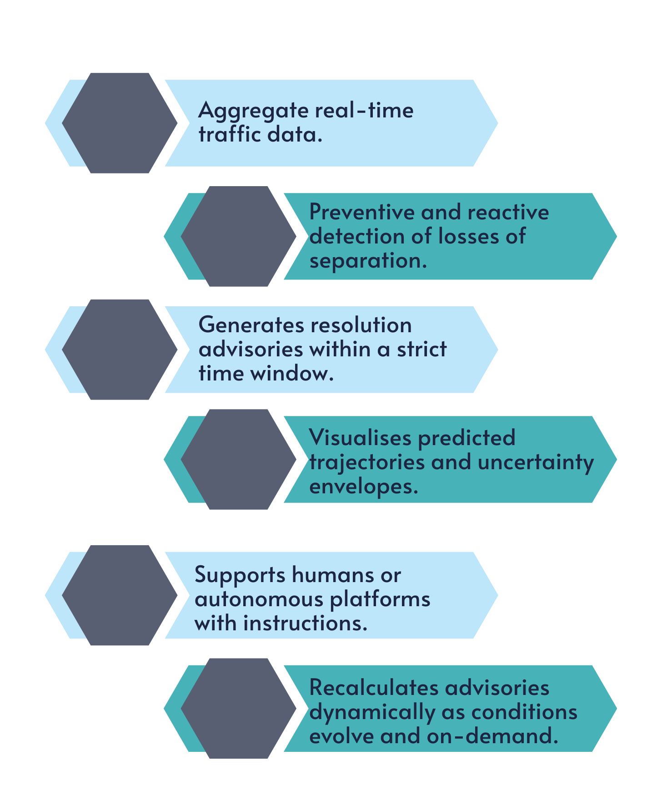
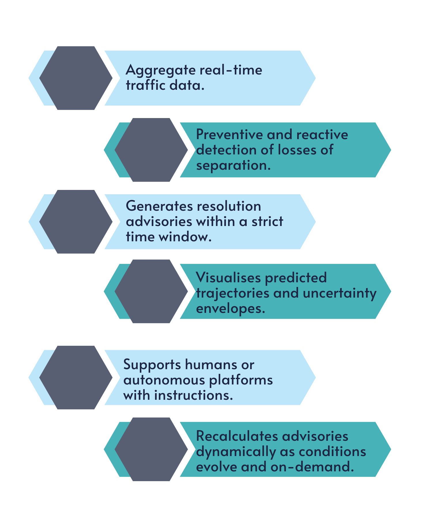

Augmented is on a mission to revolutionise air traffic safety for very low level operations through human-centric, AI-driven separation assurance. By leveraging Sparrow, the first but not the least breakthrough solver, we provide highly scalable, cloud-hosted safety nets designed to resolve complex multi-agent conflicts in real-time.
Our goal is to bridge the gap between academic excellence and industrial reality, reducing operator workload and facilitating a safe, transparent transition toward the future of autonomous aviation.
Supports decision-making for both UAS and UAM operations across Very Low Level, U-space, and "grey zones" between traditional and emerging airspace in urban, suburban, and rural settings.
Designed for environments containing UAM/UAS operations but also Commercial Air Transport, and General Aviation with varying levels of cooperation.
Supports heterogeneous vehicle categories, including fixed-wing aircraft, multirotor UAVs, and eVTOL platforms.
Maintains reliability despite dynamic traffic patterns or limited, delayed, human decision-making latency, and irregularly updated surveillance data.